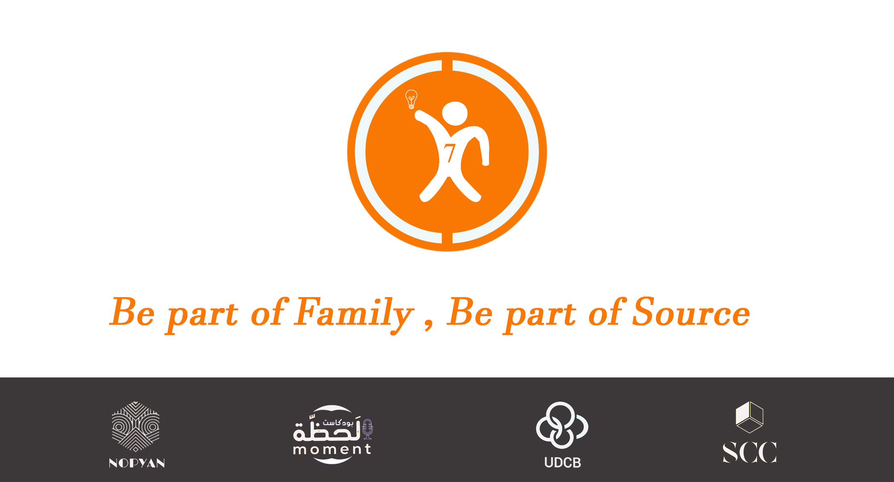

سورس هي منظمة غير ربحية تهدف إلى تمكين الشباب من خلال توفير فرص التعلم والابتكار في مجالات التكنولوجيا والريادة والقيادة. سورس تقدم برامج تدريبية متنوعة ومخصصة لتلبية احتياجات الشباب في العصر الرقمي، وتساعدهم على تطوير مهاراتهم وقدراتهم وثقتهم بأنفسهم. سورس تسعى أيضا إلى خلق مجتمع نشط ومتعاون من الشباب المهتمين بالتكنولوجيا والابداع، وتوفر لهم منصة لتبادل الأفكار والخبرات والفرص. سورس هي المنظمة المثالية لكل شاب يرغب في تحقيق أحلامه وإحداث فرق في المجتمع.
رسالتنا
رسالتنا هي تزويد الشباب بالمعرفة والأدوات والثقة التي يحتاجونها ليصبحوا مبدعين وقادة ورياديين في مجالاتهم. نحن نؤمن بأن الشباب هم المستقبل ، ونحن نسعى إلى تمكينهم من تحويل أفكارهم إلى حلول عملية ومستدامة تحسن حياتهم ومجتمعاتهم.
رؤيتنا
رؤيتنا هي أن نكون منظمة رائدة في مجال التعليم والابتكار والتكنولوجيا في العالم العربي ، وأن نخلق مجتمعا من الشباب المتحمس والمتعاون والمؤثر ، يستخدمون التكنولوجيا كوسيلة لتحقيق أهدافهم ورؤاهم.